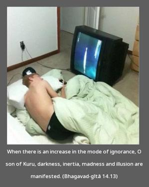
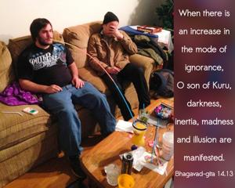
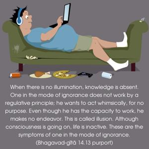

When there is an increase in the mode of ignorance, O son of Kuru, darkness, inertia, madness and illusion are manifested.



When there is no illumination, knowledge is absent. One in the mode of ignorance does not work by a regulative principle; he wants to act whimsically, for no purpose. Even though he has the capacity to work, he makes no endeavor. This is called illusion. Although consciousness is going on, life is inactive. These are the symptoms of one in the mode of ignorance.